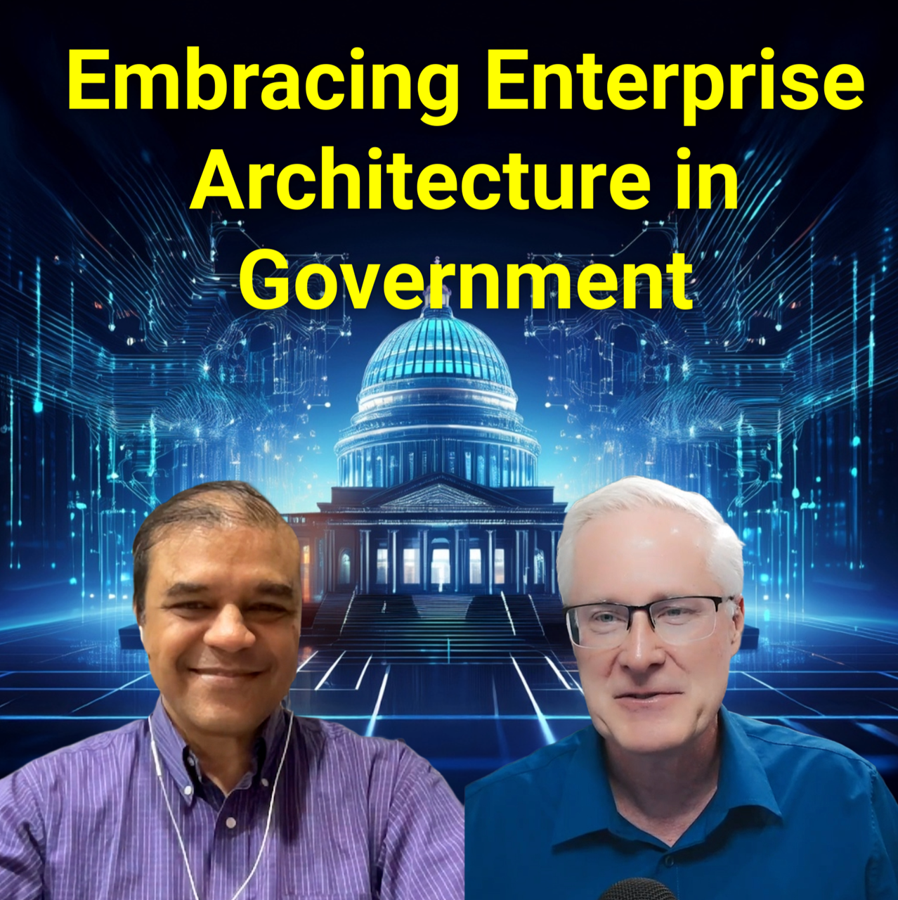

#286 Embracing Enterprise Architecture
In this episode of "Embracing Digital Transformation," host Dr. Darren speaks with guest Dr. Pallab Saha, General Manager at The Open Group, about the pivotal role of enterprise architecture in guiding organizations through digital transformations. T..
Watch Now Listen Now
#285 From Island to AI Pioneer: Igor Jablokov on ChatGPT and Innovation
In this compelling episode of "Embracing Digital Transformation," host Dr. Darren welcomes Igor, the founder of Pryon, an AI expert, to discuss the intersection of artificial intelligence, knowledge management, and organizational innovation. With an ..
Watch Now Listen Now